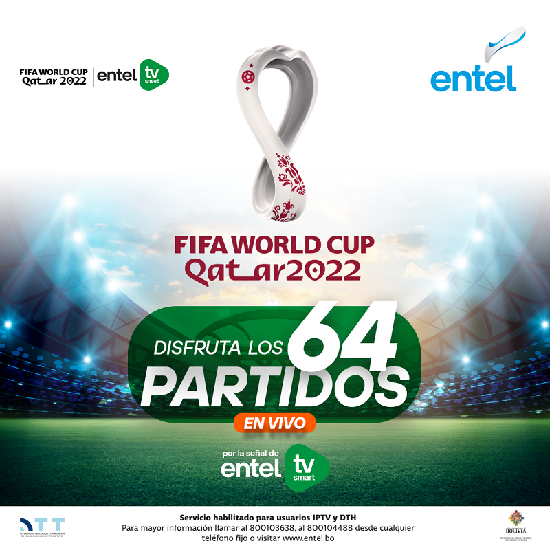
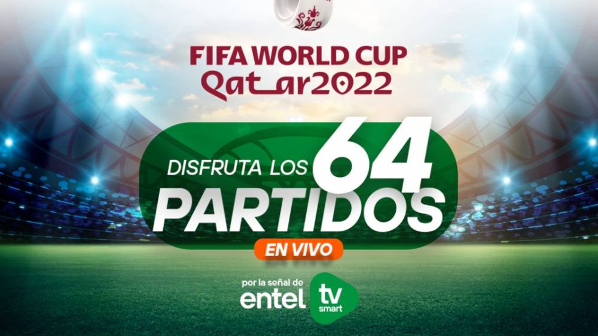

PROMOCIÓN Y DESCUENTOS EN
ENTEL

El Mundial de Fútbol Qatar 2022 está cerca y Entel lo sabe.

La transmisión incluirá la ceremonia inaugural, la fase de grupos, los partidos de octavos, de cuartos, la etapa de las semifinales y la esperada final futbolera; es decir los 64 partidos a disputarse.
Los encuentros deportivos estarán disponibles para los usuarios de los servicios de Televisión por Fibra Óptica (IPTV) y Televisión Directa al Hogar (DTH), que es televisión por satélite.